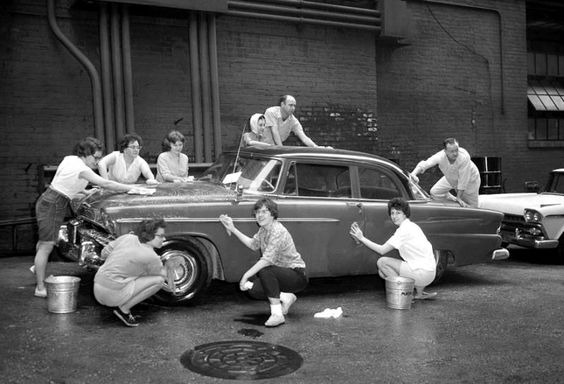

AUTOLAVADOS CHIAPAS
Hacemos que valga mas la pena haber comprado tu auto!!!
En AUTOLAVADOS CHIAPAS, nos especializamos en ofrecer servicios de lavado y detallado de alta calidad para vehículos de gama alta. Nuestro equipo de profesionales está dedicado a proporcionar un servicio impecable, utilizando solo productos de primera calidad para garantizar que tu coche reciba el mejor cuidado posible.
Nuestra empresa de servicios fue fundada en 1990, por Don Jorge Castro originario del estado de Chiapas en Mexico, inicio ayudando a sus vecinos limpiando sus autos, y poco a poco se fue dando cuenta que a sus clientes les agradaba mucho el servicio en especial porque Don Jorge se oriento especialmente en lavado y cuidado de vehiculos de lujo. Desde ese entonces, a lo largo de los años a crecido hasta convertirse en el principal proveedor de servicios de lavado de autos de lujo del pais.
Ofrecemos una variedad de servicios para los vehiculos de nuestros clientes, tambien conocemos las necesidades de nuestros clientes y sabemos que ellos tambien merecen un trato especial: